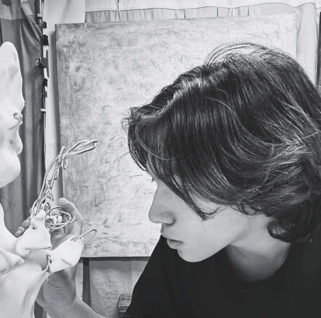
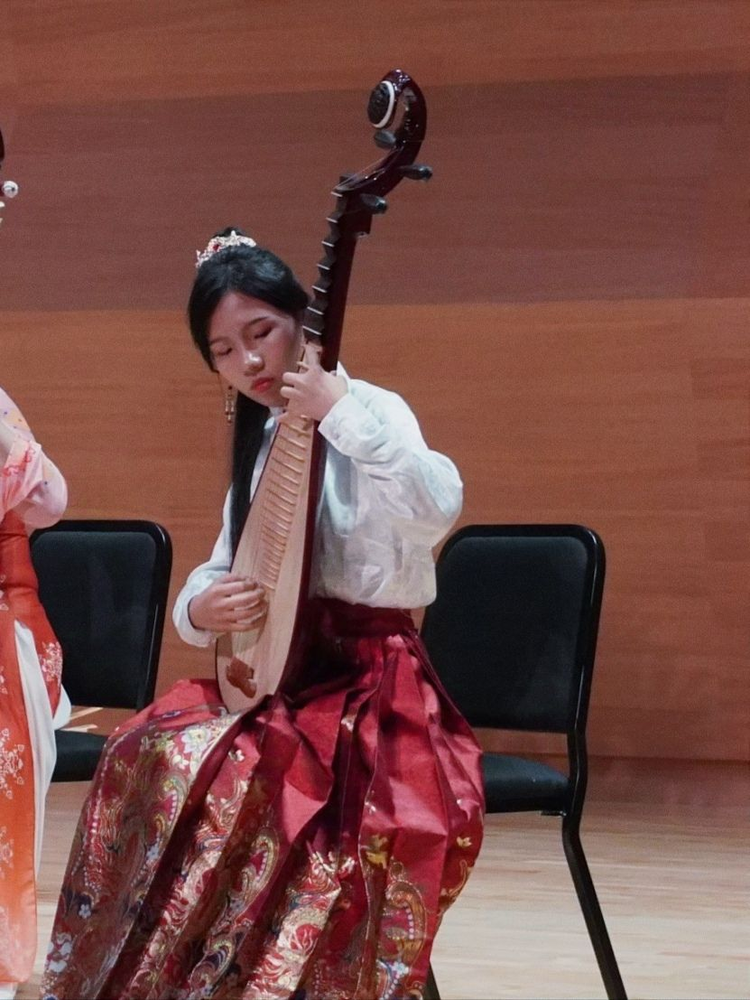

王子榮
國立清華大學清華學院學士班
國立台北教育大學藝術與造型設計藝術組
從國小國中我都就讀於美術班。為了跳脫舒適圈與思考邏輯；選擇了數位實中，剛開始進時非常迷茫，因為從一般國中體制轉到實驗教育的不適應，讓生活步調與學習狀況都很不好，所以高一整年都很痛苦。雖然學校小，但是我認為實驗高中迷人的地方就是在於學校的跨域性強，每個人都有自己的專長；大家的合作共創可以產生不同的火花。真正意義上的轉變是發現，其實相較讀書我更適合參加比賽以及創作、做專案，後面跟著學校的必修課做了許多的研究、調查以及參加比賽，慢慢抓到自己的學習步調與方式，最後透過特選考上理想的學校

余品樺
42屆全球華文學生文學獎高中短篇小說組第2名
國立中央大學、中正大學中國文學系
東吳大學、東海大學中國文學系
國立暨南國際大學中國語文學系
在數位實中可以運用彈性空間發展自己喜歡的領域。我會在可自由選擇主題的課堂專案、報告中結合自己的喜好進行探究，產出特別的作品；也會利用課表中的空堂進行創作、研究或申請個人需求校外課程，以增加作品和增強能力。
